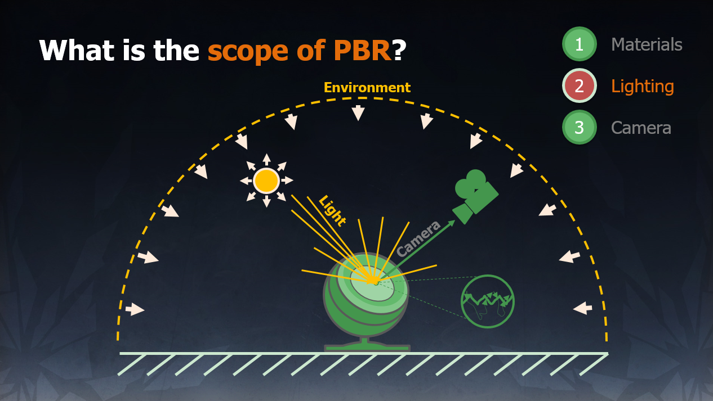

PBR
基于物理的渲染的范畴，由三部分组成：
- 基于物理的材质（Material）
- 基于物理的光照（Lighting）
- 基于物理适配的摄像机（Camera）

PBR 并不是“一项”技术，它是由一系列技术的集合，并不断改进的结果。
Physically Based Rendering:From Theory To Implementation
SIGGRAPH 2010 Course: Physically-Based Shading Models in Film and Game Production
SIGGRAPH 2013 Course: Physically Based Shading in Theory and Practice